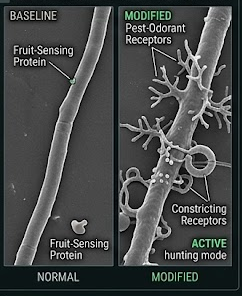
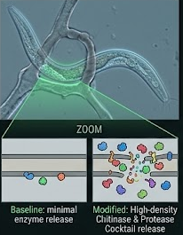
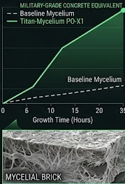
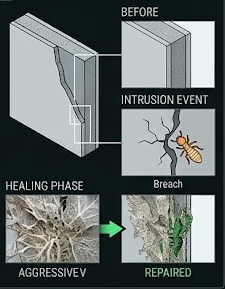

This page presents a hypothetical synthetic biology design for portfolio and educational purposes. PO-X1 has not been physically engineered, tested, or validated by me. Figures are AI-generated conceptual illustrations and should not be interpreted as experimental microscopy, measured graphs, or laboratory results.
Timber and other bio-based construction materials are vulnerable to cracking, moisture damage, fungal decay, and wood-boring insects. Current repair methods usually require damage to be detected after it has already spread, creating long-term maintenance costs and material waste. This proposal explores a speculative living-material system in which filamentous fungal networks are designed to sense localized structural damage, reinforce weakened regions, and reduce insect activity through controlled enzyme release. The concept builds on existing research into mycelium-based composites, fungal growth behavior, chitin-degrading enzymes, and developmental control pathways. Rather than claiming a finished organism or tested material, this proposal frames PO-X1 as a conceptual research direction for future self-healing biomaterials.

The first design goal is localized growth toward damaged zones. Fungal mycelium naturally forms branching networks, and some fungi can organize into thicker transport structures known as rhizomorphs. PO-X1 imagines redirecting this behavior toward mechanical stress and chemical signals associated with damaged timber, producing denser cord-like growth around compromised regions instead of uncontrolled outward expansion.

Wood-boring insects contain chitin in their exoskeletons, and chitinases are enzymes capable of breaking down chitin. In this concept, chitin-targeting enzyme release is restricted to insect contact zones rather than being produced throughout the full material. Protective wall modifications are included as a design constraint so that defensive enzyme activity does not weaken the fungal matrix itself.

Mycelium-based composites are already being studied as lightweight, sustainable materials, but their mechanical performance depends strongly on fungal species, substrate, growth conditions, density, and processing method. PO-X1 therefore does not claim concrete-level strength. Instead, it proposes that controlled hyphal bonding and matrix densification could improve local stiffness enough to support minor crack filling, insulation repair, or non-load-bearing reinforcement.

The regeneration phase is modeled as a localized repair response rather than a complete structural rebuild. Nutrients from the surrounding substrate and damaged organic material would be redirected into new hyphal growth near cracks or insect galleries. The expected outcome is partial restoration of continuity within small defects, not guaranteed recovery of full original strength.
Mitigation of uncontrolled sporulation and fruiting morphogenesis: